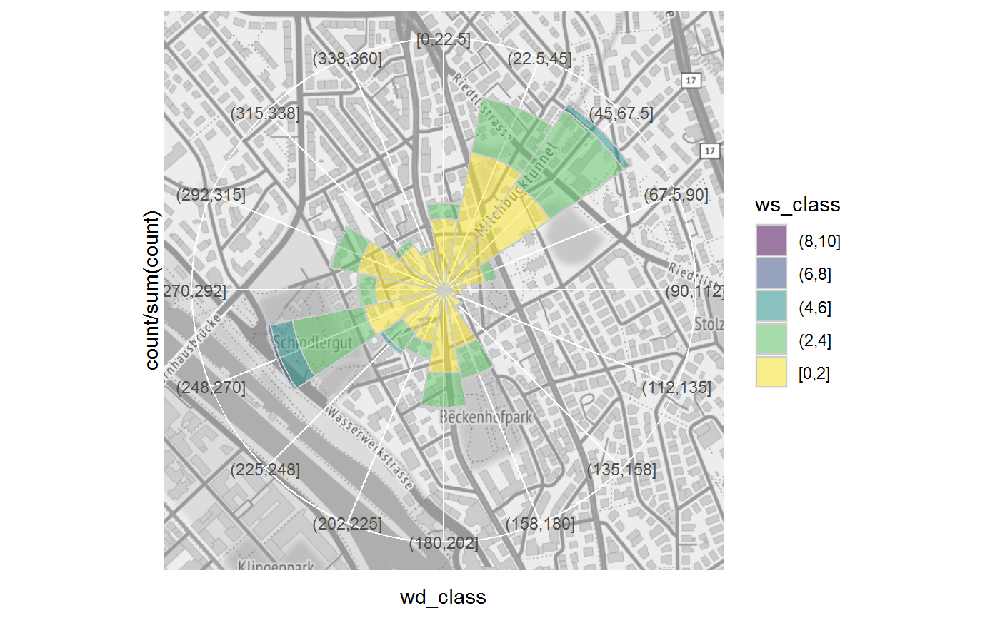

Customizing needs to be done
coord_polar2(theta = "x", start = 0, direction = 1, clip = "on", bg = NULL)
| theta | variable to map angle to ( |
|---|---|
| start | offset of starting point from 12 o'clock in radians |
| direction | 1, clockwise; -1, anticlockwise |
| clip | Should drawing be clipped to the extent of the plot panel? A
setting of |
| bg | raster for background image |
ggplot2 coord system
ggplot2::cord_polar()
library(ggplot2) fn <- system.file("extdata", "Zch_Stampfenbachstrasse_2010-2014.csv", package = "rOstluft.data") data <- rOstluft::read_airmo_csv(fn) wide <- rOstluft::rolf_to_openair(data) winkel_sector <- 22.5 winkel_half <- winkel_sector / 2 wide <- dplyr::mutate( wide, wd_shifted = (.data$wd + winkel_half) %% 360, wd_class = ggplot2::cut_width(.data$wd_shifted, center = winkel_half, width = winkel_sector), ws_class = forcats::fct_rev(ggplot2::cut_interval(.data$ws, length = 2)) ) # background map bbox <- tibble::tibble(x = c(2683141 - 500, 2683141 + 500), y = c(1249040 - 500, 1249040 + 500)) bbox <- rOstluft::transform_LV95_to_WSG84(bbox) bbox <- c(left = bbox$lon[1], right = bbox$lon[2], bottom = bbox$lat[1], top = bbox$lat[2]) raster_map <- ggmap::get_stamenmap(bbox, zoom = 16, maptype = "terrain", source = "stamen", color = "bw") wind_rose <- ggplot(wide, aes(x = wd_class, fill = ws_class, y = stat(count / sum(count)))) + geom_bar(width=1, colour="grey80", size=0.5, alpha = 0.5, show.legend = TRUE) + scale_x_discrete(drop = FALSE, na.translate = FALSE) + scale_y_discrete(labels = function(x) {stringr::str_c(x*100, " %") }) + scale_fill_viridis_d(direction = 1) wind_rose + coord_polar2(start = - winkel_half * pi / 180, bg = raster_map)#> Warning: Removed 27 rows containing non-finite values (stat_count).